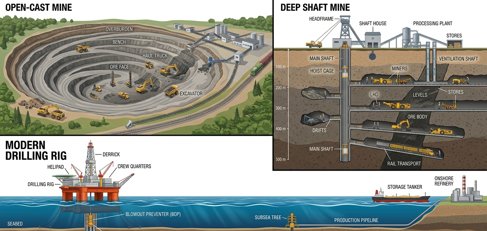
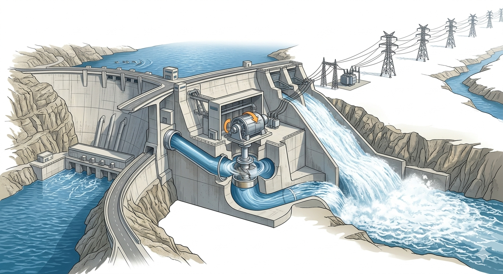

Mineral and energy resources provide the foundation for economic and industrial development. Human progress through the Copper Age, Bronze Age, and Iron Age shows the importance of metals. The earth's crust is composed of different kinds of rocks, and all rocks contain crystals of naturally occurring chemicals called minerals.
Concept
Geologist: A scientist who studies the composition and structure of the earth's crust (Geology).
Mineral: A naturally occurring chemical in rocks. A mineral may be a single element or a compound. Mineral crystals give rocks their hardness, lustre, and colors.
2. Extraction and Classification of Minerals
A. Extraction of Minerals
A rock having a large concentration of a particular metal mineral is called its ore (e.g., iron ore, copper ore). The extraction of useful minerals from rocks under the earth's surface is called mining. Methods include:
Open Cast Mining: Extraction from just below the ground surface by removing surface layers.
Shaft Mining: Extraction by sinking a vertical shaft and cutting horizontal tunnels to reach deep minerals.
Drilling: Boring narrow, deep wells to extract liquids/gases like petroleum and natural gas.
Quarrying: Open excavation for building materials like rock, sand, or clay.
B. Types of Minerals

Figure 1: Common Mineral Extraction Methods
Fact
1. Metallic Minerals: Hard substances with a shine/lustre.
Ferrous: Contain iron (e.g., Iron ore, Manganese ore).
Non-ferrous: Do not contain iron (e.g., Gold, Silver, Copper).
Alloys: Mixtures of metals to improve strength (e.g., Brass = Copper + Zinc; Bronze = Copper + Tin).
2. Non-metallic Minerals: Do not contain metals and are lighter (e.g., Sandstone, Limestone, Mica, Diamond).
3. Mineral Fuels: Obtained from sedimentary rocks, used for energy (e.g., Coal, Petroleum, Natural Gas).
3. Distribution and Conservation of Minerals
Distribution of minerals is highly uneven as it depends on the type of rocks. Igneous and metamorphic rocks are rich in metallic minerals (iron, gold), while sedimentary rocks hold mineral fuels. Sometimes rivers erode and deposit minerals, forming placer deposits.
Key Examples:
Iron: Backbone of modern civilization (Haematite & Magnetite). Found in Australia, Russia, India (Jharkhand, Odisha).
Copper: Used in electric goods. Found in Chile, Australia, USA, India (MP, Rajasthan).
Bauxite (Aluminium): Used in wiring and aeroplanes. Found in Guinea, Australia, India (Odisha, Andhra Pradesh).
Important
Conservation of Minerals: Minerals are exhaustible resources. Conservation means utilizing them in the best possible way without damaging the environment. Measures include:
Using efficient mining/processing methods to minimize wastage.
Recycling mineral resources (using metallic scrap).
Substituting scarce minerals with abundant ones.
4. Energy Resources
Energy is the capacity to do work. Electricity is generated through Thermal Power Plants, Nuclear Power Plants, and Hydroelectric Plants, and distributed via an electrical grid.
A. Conventional Sources of Energy
These are traditional sources, widely in use, and mostly non-renewable (except hydel power).

Figure 2: Hydroelectric Power Generation
Coal: Formed from buried plant cover. Types include Anthracite (best quality, 90% carbon), Bituminous, Lignite, Peat. Used in steel and thermal industries.
Petroleum / Mineral Oil: Also called Black Gold. Extracted heavily from the Middle East. By-products include petrol, diesel, and kerosene.
Natural Gas: Often found with mineral oil. Used as CNG for vehicles.
Hydel Power (Hydroelectricity): Renewable. Falling water from dams turns turbines. Initial cost is high, but it becomes a cheap source of energy (e.g., Bhakra Nangal Dam).
B. Non-Conventional Sources of Energy
These are newer, experimental, renewable, less expensive to maintain, and eco-friendly.
Solar Energy: Unlimited energy from the sun. Captured via Solar Photovoltaic (SPV) panels.
Wind Energy: Captured by windmills in coastal areas (e.g., Netherlands).
Geothermal Energy: Internal heat of the earth, prominent in volcanic areas (e.g., hot springs in Manikaran, HP).
Nuclear Energy: Obtained from radioactive elements like uranium and thorium. An alternative to fossil fuels that reduces greenhouse gases.
Tidal Energy: Generated from ocean tides by building dams at narrow sea openings.
Biogas: Gaseous fuel from organic wastes (animal dung, kitchen waste).
Fact
Comparison: Conventional sources are expensive to install/maintain, mostly non-renewable, and cause severe air pollution. Non-conventional sources are renewable, eco-friendly, and represent the future of global energy.
5. Conservation of Energy Resources
Rapid population growth has drastically increased energy consumption. The rampant exploitation of non-renewable fossil fuels can lead to an energy crisis. Conservation means restricting wasteful consumption.
Measures for Energy Conservation:
Use of LED bulbs and tubelights.
Use public transport instead of private vehicles.
Switch off lights and fans when not in use.
Use power-saving electronic devices and automatic power savers.
Shift towards non-conventional sources (solar panels, solar water heaters).